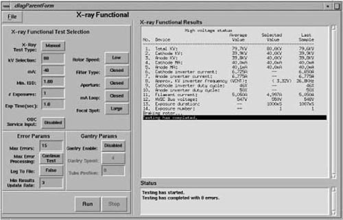

Proprietary to General Electric
Direction 5114045-800, Rev# 10
LightSpeed 4.X Service Information (Advanced)
Proprietary to General Electric |
Before beginning this procedure, please read the safety information in Equipment Service - Gantry.
Select [ DIAGNOSTICS ] .
Select [ X-RAY GENERATION] .
Select [KV & MA (X-RAY)] .
It assumes your baseline is accurate. Test this baseline with a bleeder at least once a year.
Illustration 1 shows the X-Ray Functional Test screen. Input ranges are:
KV: 60 to 140 KV in 1 KV steps
mA: 40 to 400 mA in 1 mA steps (10 to 440 mA with Performix tube and CRPDU)
Duration: 1.0 to 10 seconds in 0.1 second steps
Iterations: 1 to 100
ISD: 1 to 60 seconds in 1 second steps
Select [RUN] and wait for the Scan Start button on the console keypad to illuminate. Press the Scan Start button, when lit, to initiate the scan.
The X-Ray Functional Test Results screen output consists of HV statistics. The data displayed was taken 1007 milliseconds into the exposure and was posted to the screen. (“_” indicates an unknown value.)
Average: the average value taken over the duration of the exposure.
Selected: the value prescribed by the user.
Last Sample: the last value read before the screen updated. The Last Sample exposure duration displays the data collection time, in milliseconds, from the start of exposure.
Data displayed in the Last Sample column represents the last sample of HV statistics taken on or before 1007 milliseconds after the start of the exposure.
Illustration 1 represents the screen at the end of the exposure. You can tell the exposure has ended because the Last Sample exposure duration equals or exceeds the Selected exposure duration value.
| NOTE: | The backup timer determines the exposure duration. This timer stops counting after the system removes the Exposure Command and HV ON status, which means the last exposure could have occurred later than indicated. |
Illustration 1: X-Ray Functional Test Results Example
